trials = 10
success = 82 Basics
2.1 Frequentist and Bayesian coin flip
Assume I’m trying to guess if a coin comes up heads or tails. I have had 10 trials, and 7x success.
What we want to know now is what my properties are regarding correctly guessing the outcome of the coin flip experiment.
2.1.0.1 The model
We will try to examine this data with a simple model that makes the following assumption: every time I throw the coin, I will have a probability of p to guess correctly.
For a single trial, this model is called the bernoulli-model; for multiple trials, it’s calle the binomial model. It’s easy to calculate the probabilities by hand, but you can also get it in r via the dbinom function.
2.1.0.2 Overview
In the rest of this script, I will look at this data with the binomial model, applying the three most common inferential methods
- Maximum likelihood estimation
- Null-hypothesis significance testing
- Bayesian inference
Each of these methods is consistent and calculates a sensible thing. But each of these three things are different. I’ll highlight differences at the end of each application.
2.1.1 THE MLE ESTIMATE
The idea of maximum likelihood estimation (MLE) is to look for the set of parameters that would, under the given model assumption, lead to the highest probability to obtain the observed data. In our case we have only one parameter, the probability of success per flip. Let’s plot this for different values and look for the maximum.
# parameters to check
parametervalues <- seq(0,1,0.001)
# get the probability for all parametervalues
likelihood <- dbinom(success,trials,parametervalues)
# plot results
plot(parametervalues, likelihood, type = "l")
legend("topleft", legend = c("Likelihood", "maximum"), col = c("black", "red"), lwd = 1)
MLEEstimate <- parametervalues[which.max(likelihood)]
abline(v=MLEEstimate, col = "red")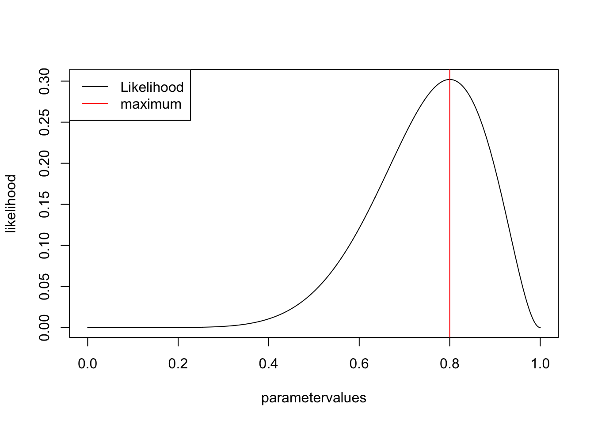
2.1.1.1 Confidence intervals
OK, the MLE is the best value, but what is often m
MLE confidence intervals are constructed by asking yourself:
If I would do the experiment many times, how would the estimate scatter, and how wide would I have to take the interval so that the true value is contained in the interval x% (typically 95%) under repreatedly performing the experiment?
The test statistics that can be used to do this are discussed, e.g., in https://onlinecourses.science.psu.edu/stat504/node/39. The result for a 1-parameter model is that the CI is at a log likelihood difference of 1.92
plot(parametervalues, likelihood, type = "l")
legend("topleft", legend = c("Likelihood", "maximum", "CI"), col = c("black", "red", "green"), lwd = 1)
MLEEstimate <- parametervalues[which.max(likelihood)]
abline(v=MLEEstimate, col = "red")
confidence.level <- log(max(likelihood)) -1.92
leftCI <- parametervalues[which.min(abs(log(likelihood[1:which.max(likelihood)]) - confidence.level))]
abline(v=leftCI, col = "green")
rightCI <- parametervalues[which.min(abs(log(likelihood[which.max(likelihood):length(likelihood)]) - confidence.level)) + which.max(likelihood) -1]
abline(v=rightCI, col = "green")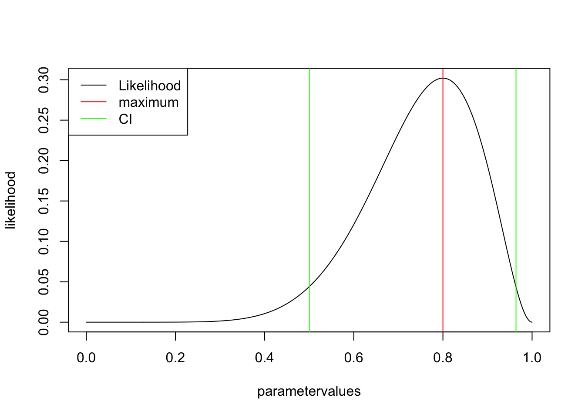
Note: there are also other methods to look at uncertainty with likelihoods, e.g. the profile likelihood, see discussion here
2.1.1.2 Outcome of a MLE
- Best estimate (MLE)
- 95% CI –> if we would do the experiment over and over again, 95% of the CIs would contain the true value. NOTE: this is != saying: for a given dataset, the true value is in the CI with 95% probability!
2.1.2 GETTING THE P-VALUE FOR FAIR COIN
want to get p-value for a smaller or equal result (1-tailed) given a fair coin p(k<=kobs|H0:p=0.5). Basically, we want the sum over the red bars
barplot(dbinom(0:10, 10, 0.5), col = c(rep("grey", success ), rep("red", 11-success)))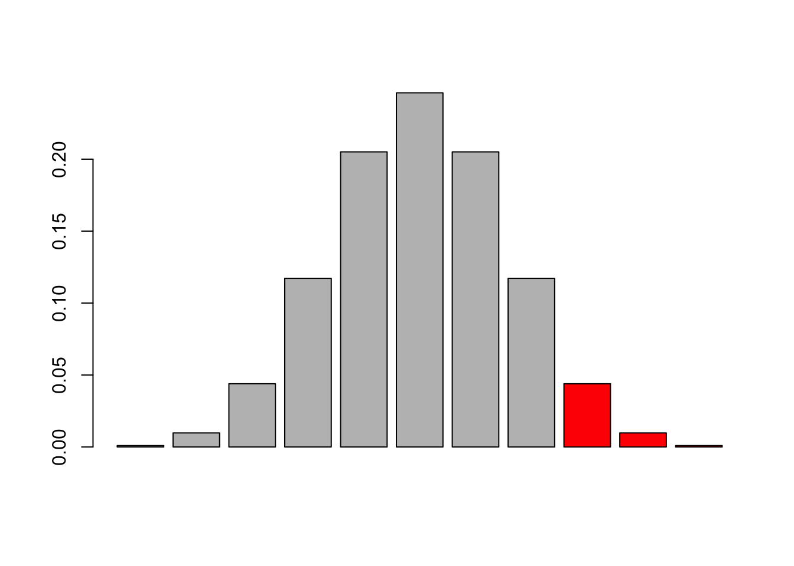
line(pbinom(0:10,trials,prob = 0.5, lower.tail = F))
Call:
line(pbinom(0:10, trials, prob = 0.5, lower.tail = F))
Coefficients:
[1] 1.2640 -0.1373We can get this with the cummulative distribution function in R
pValue <- pbinom(success,trials,prob = 0.5, lower.tail = F)but it is a bit tricky, because depeding on which side one wants to test, you have to add a -1 to the successes becaues of the discrete nature of teh data and the definition of the cummulative in R. You can try, but it’s safer in practice to use the binom.test, which calculates the same values
binom.test(7,trials,0.5) # two sided
Exact binomial test
data: 7 and trials
number of successes = 7, number of trials = 10, p-value = 0.3438
alternative hypothesis: true probability of success is not equal to 0.5
95 percent confidence interval:
0.3475471 0.9332605
sample estimates:
probability of success
0.7 Alternatively:
binom.test(7,trials,0.5, alternative="greater") # testing for greater
binom.test(7,trials,0.5, alternative="less") # testing for less2.1.2.1 Side-note: multiple testing
Imagine there is no effect, but we keep on repeating the test 100 times. How often do you think will we find a significant effect?
data= rbinom(100,10,0.5)
pValue <- pbinom(data,trials,prob = 0.5, lower.tail = F)
sum(pValue < 0.05)[1] 7Yes, 5 is what you expect. To be exact, in the case of disrecte random distributions, the value doesn’t have to be exactly 5%, but that is a side topic, and here it works.
The message here is: if you do repeated tests, and you want to maintain a fixed overall type I error rate, you need to adjust the p-values, e.g. by
pValueAdjusted <- p.adjust(pValue, method = "hochberg")
sum(pValueAdjusted < 0.05)[1] 0Remember: in general, if you choose an alpha level of 5%, and you have absolutely random data, you should get 5% false positives (type I error) assymptotically, and the distribution of p-values in repeated experiments will be flat.
Also note: we are free to choose the null-hypothesis as we want. What would you do if you null hypothesis is that a coint should have an 0.8 proability of head?
2.1.2.2 Outcome of a NHST
- p-value –> probability to see the observed or more extreme data given the null hypothesis
- rejection H0 if p < alpha. If p > alpha, the test ist inconclusive
- if you do multiple tests, you may want to adjust the p-values
2.1.3 The BAYESIAN ESTIMATE
Remember for Bayes p(M|D) = p(D|M) * p(M) / P(D), and we can show that p(D) is just the integral over p(D|M) * p(M)
We had already calculated p(D|M), so we just need to define p(M), the prior
for flat prior p(M) = flat = 1 See http://en.wikipedia.org/wiki/Jeffreys_prior , section on Bernoulli trial, to understand that this is not neccesarily the best uninforative choice, but it is simple at any rate
prior <- rep(1,1001)
posterior <- likelihood * prior / sum(likelihood * prior) * length(parametervalues)
plot(parametervalues, posterior, col = "darkgreen", type = "l")
lines(parametervalues, likelihood)
lines(parametervalues, prior, col = "red" )
legend("topright", c("likelihood", "prior", "posterior"), col = c("black", "red", "green"), lwd = 1 )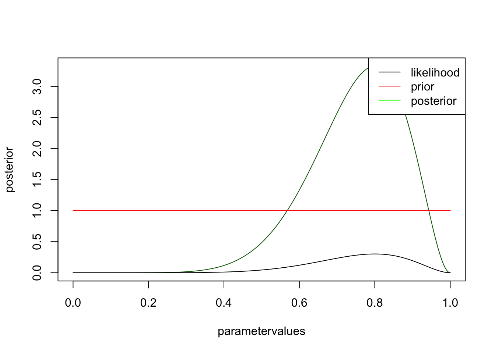
you see that likelihood and posterior have the same shape. However, this is only because I chose a flat prior. There is still a difference, however, namely that the posterior is normalized, i.e. will integrate to one. It has to be, because we want to interpret it as a pdf, while the likelihood is not a pdf. Let’s look at the same example for an informative prior
prior <- dnorm(parametervalues, mean = 0.5, sd = 0.1)
posterior <- likelihood * prior / sum(likelihood * prior) * length(parametervalues)
plot(parametervalues, posterior, col = "darkgreen", type = "l")
lines(parametervalues, likelihood)
lines(parametervalues, prior, col = "red" )
legend("topright", c("likelihood", "prior", "posterior"), col = c("black", "red", "green"), lwd = 1 )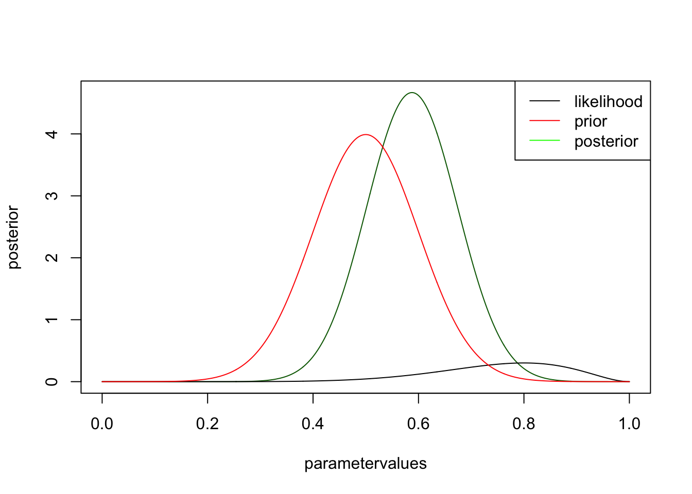
you can see that the likelihood moves the posterior away from the prior, but not by much. try the same think with more data, but the same ratio, i.e. change to 30 trials, 9 success
2.1.3.1 Bayesian CI
calculated via central 95% probability
plot(parametervalues, posterior, col = "darkgreen", type = "l")
lines(parametervalues, likelihood)
lines(parametervalues, prior, col = "red" )
legend("topright", c("likelihood", "prior", "posterior"), col = c("black", "red", "green"), lwd = 1 )
cumPost <- cumsum(posterior) / (length(posterior) -1)
leftCI <- parametervalues[which.min(abs(cumPost - 0.025))]
abline(v=leftCI, col = "darkgreen", lty = 2, lwd = 2)
leftCI <- parametervalues[which.min(abs(cumPost - 0.975))]
abline(v=leftCI, col = "darkgreen", lty = 2, lwd = 2)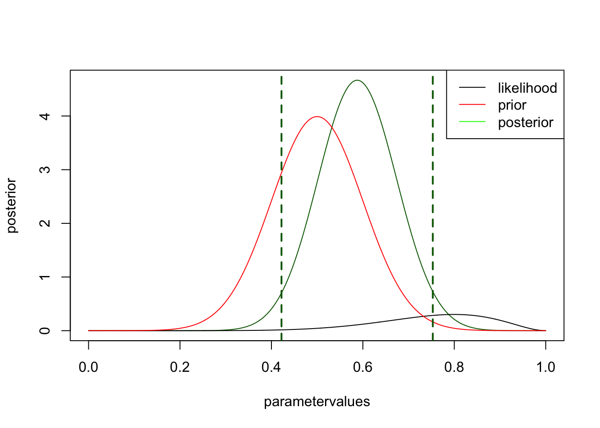
2.2 Interpreting the Posterior
In standard statistics, we are used to interpret search for the point that maximizes p(D|phi), and interpret this as the most likely value.
parameter = seq(-5,5,len=500)
likelihood = dnorm(parameter) + dnorm(parameter, mean = 2.5, sd=0.5)
plot(parameter,likelihood, type = "l")
MLEEstimate <- parameter[which.max(likelihood)]
abline(v=MLEEstimate, col = "red")
text(2.5,0.8, "MLE", col = "red")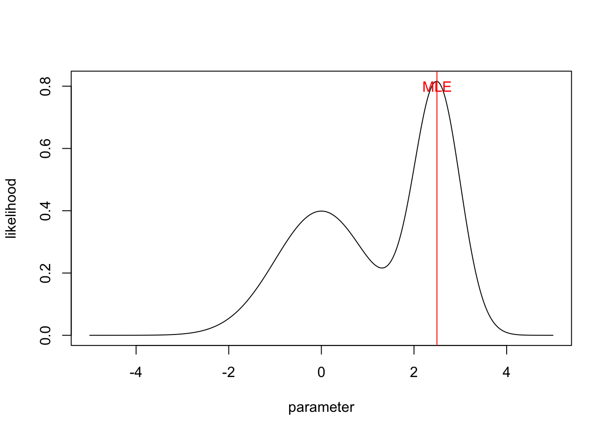
Assume the prior is flat, then we get the posterior simply by normalization
unnormalizedPosterior = likelihood * 1
posterior = unnormalizedPosterior / sum(unnormalizedPosterior/50) In Bayesian statistics, the primary outcome of the inference is the whole distribution.
plot(parameter,posterior, type = "l")
polygon(parameter, posterior, border=NA, col="darksalmon")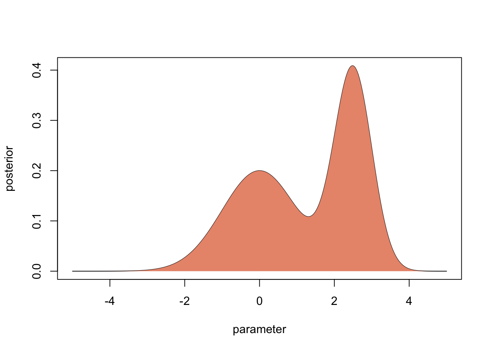
If we don’t have to, this is what we should interpret and forecast with. However, in many cases, people what to summarize this distribution by particular values. Here is what you typically use for different situations
2.2.1 The MAP (mode of posterior)
The problem with the best values is that it depends what you want to do with it. If you want to have the most likely parameter value, what you can do is to use the mode of the posterior distribution. It is called the maximum a posteriori probability (MAP) estimate.
However, if the distribution is very skewed as in our example, it may well be that the MAP is far at one side of the distribution, and doesn’t really give a good distribution of where most probability mass is. If it is really neccessary to do predictions with one value (instead of forwarding the whole posterior distribution), I would typically predict with the median of the posterior.
plot(parameter,posterior, type = "l")
polygon(parameter, posterior, border=NA, col="darksalmon")
MAP <- parameter[which.max(posterior)]
abline(v=MAP, col = "red")
text(2.5,0.4, "MAP", col = "red")
medianPosterior <- parameter[min(which(cumsum(posterior) > 0.5 * 50))]
abline(v=medianPosterior, col = "blue")
text(1.8,0.3, "Median", col = "blue")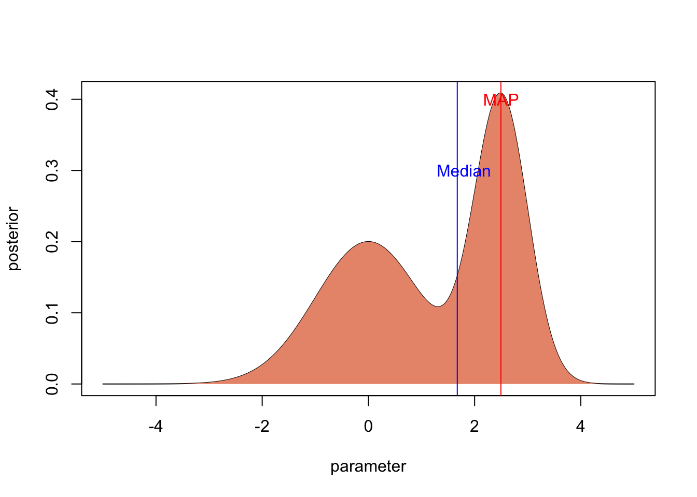
2.2.2 Bayesian credibile intervals
Typically, one also wants uncertainties. There basic option to do this is the Bayesian credible interval, which is the analogue to the frequentist confidence interval. The 95 % Bayesian Credibility interval is the centra 95% of the posterior distribution
plot(parameter,posterior, type = "l")
lowerCI <- min(which(cumsum(posterior) > 0.025 * 50))
upperCI <- min(which(cumsum(posterior) > 0.975 * 50))
par = parameter[c(lowerCI, lowerCI:upperCI, upperCI)]
post = c(0, posterior[lowerCI:upperCI], 0)
polygon(par, post, border=NA, col="darksalmon")
text(0.75,0.07, "95 % Credibile\n Interval")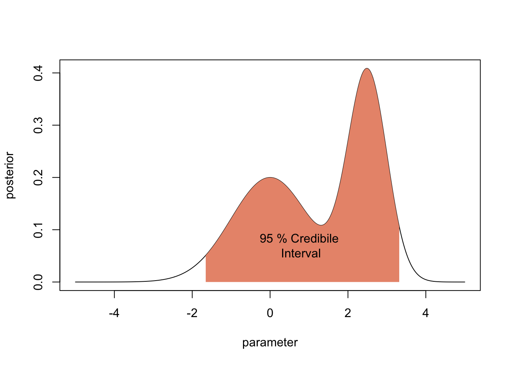
There are two alternatives to the credibility interval that is particularly useful if the posterior has weird correlation structres.
- The Highest Posterior Density (HPD). The HPD is the x% highest posterior density interval is the shortest interval in parameter space that contains x% of the posterior probability. It would be a bit cumbersome to calculate this in this example, but if you have an MCMC sample, you get the HPD with the package coda via
HPDinterval(obj, prob = 0.95, ...)- The Lowest Posterior Loss (LPL) interval, which considers also the prior.
More on both alternatives here
2.2.3 Multivariate issues
Things are always getting more difficult if you move to more dimensions, and Bayesian analysis is no exception.
2.2.3.1 Marginal values hide correlations
A problem that often occurs when we have more than one parameter are correlations between parameters. In this case, the marginal posterior distributions that are reported in the summary() or plot functions of coda can be VERY misleading.
Look at the situation below, where we have two parameters that are highly correlated. The marginal posteriors look basically flat, and looking only at them you may think there is no information in the likelihood.
However, if you look at the correlation, you see that the likelihood has excluded vast areas of the prior space (assuming we have had flat uncorrelated likelihoods in this case).
library(psych)
par1= runif(1000,0,1)
par2 =par1 + rnorm(1000,sd = 0.05)
scatter.hist(par1,par2)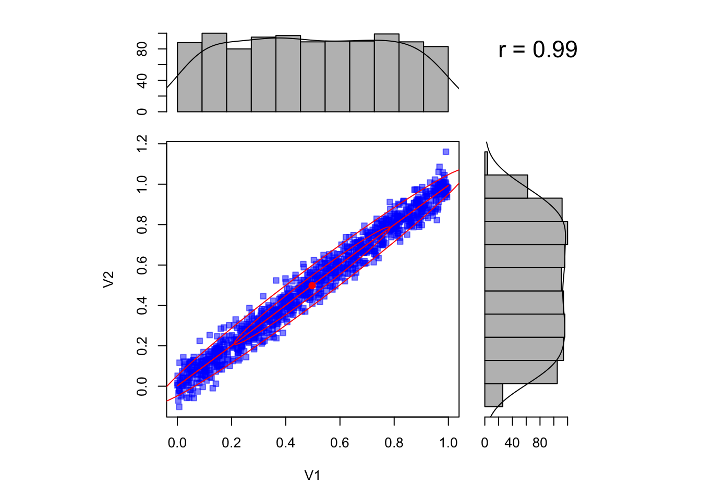
It is therefore vital to plot the correlation plots as well to be able to judge the extent to which parameters are uncertaint.
If you have more parameters, however, you may still miss things here, because there could be higher-order correlations between the parameters that look random in the two-dimensional plot. A good proxy to get an overall reduction of uncertainy across all parameters, including all these higher-order correlations, is to compare the prior predictive distribution with the posterior predictive distribution.
2.2.3.2 Nonlinear correlations
A further issue that many people are not aware of is that the marginal mode (maximum) does not need to coincide with the global mode if correlations in parameter space are nonlinear. Assume we have a posterior with 2 parameters, which are in a complcated, banana-shaped correlation. Assume we are able to sample from this poterior. Here is an example from Meng and Barnard, code from the bayesm package (see Rmd source file for code of this function).
If we plot the correlation, as well as the marginal distributions (i.e. the histograms for each parameter), you see that the mode of the marginal distributions will not conincide with the multivariate mode (red, solid lines).
set.seed(124)
sample=banana(A=0.5,B=0,C1=3,C2=3,50000)
scatterhist(sample[,1], sample[,2])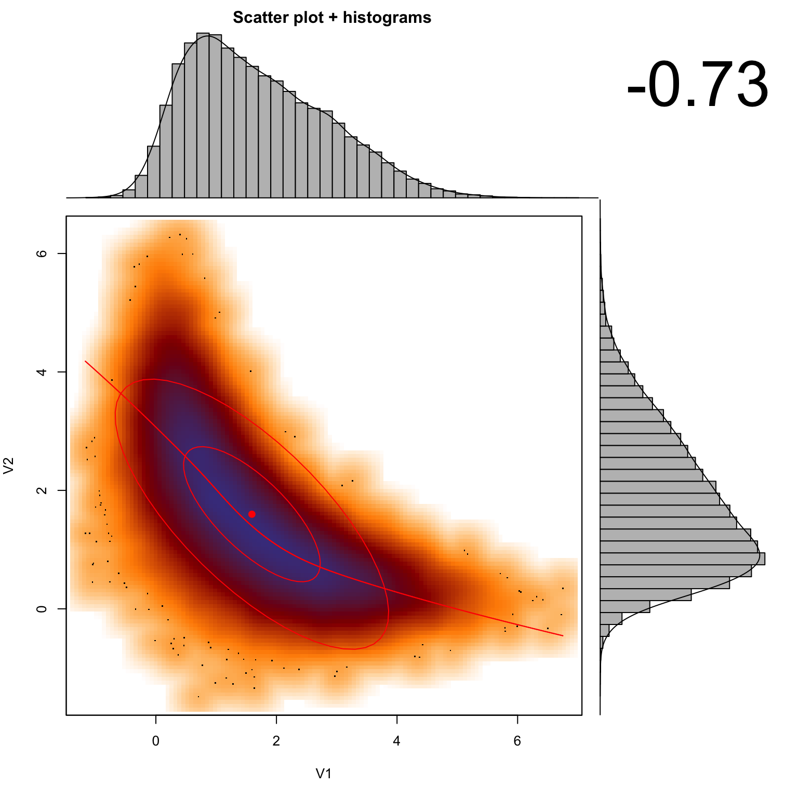
#par(mfg = c(2,1))
# skaliert nicht richtig!!!, vielleicht in die Histogramme einbauen?
#abline(h = 0.22, col = "green", lwd = 3, lty =2)
#abline(v = 0.295, col = "green", lwd = 3, lty =2)Hence, it’s important to note that the marginal distributions are not suited to calculate the MAP, CIs, HPDs or any other summary statistics if the posterior distribution is not symmetric in multivariate space. This is a real point of confusion for many people, so keep it in mind!
More options to plot HPD in 2-d here http://www.sumsar.net/blog/2014/11/how-to-summarize-a-2d-posterior-using-a-highest-density-ellipse/
2.2.4 FAQs
- http://stats.stackexchange.com/questions/176436/what-would-be-the-reason-that-the-posterior-distribution-looks-like-the-prior-us
2.3 Priors
The choice of prior (prior eliciation) is key to Bayesian analysis, and it is arguably the most contentious step in the whole procedure, as it supposedly contains “subjective” judgements. I disagree with this notion. The choice of a prior is not neccessarily subjective. It simply means that, unlike in a frequentist analysis, we should generally collect everything that is known about a parameter in advance, which may be done in an objective way. Also, we can try to avoid the inclusion of prior knowledge by choosing so-called uninformative (aka vague, reference) priors. So, a first thing to note about priors is that we have
- Informative priors that express prior knowledge about an inferential question
- Uninformative priors that express no prior knowledge about an inferential question
More about the choice of uninformative priors below. But first some other statements:
- In the limit if infinitely many data, the likelihood gets infintely sharp, and therefore the prior choice irrelevant (as long as the prior is not 0 anywhere there is likelihood)
- Priors are therefore most important if you have a small dataset
- Priors are changed by rescaling parameters (see below)
- Uninformative priors are not always flat (see below). For common problems, people have developed recommendations for which priors should be used in an uninformative setting
2.3.1 Scaling and scale-invariance of prior choices
Scaling is key to understand why uninformative priors can’t always be flat. Imagine the following situation: we have a dataset on average tree diameters, and we want to infer the average with a Bayesian method. We shouldn’t really look at the data before we specify our prior, so let’s just specify the prior, and assume we choose a flat prior between 1 and 10 because we don’t want to bias our data in any way
values = 1:5
priorWeight = rep(1/5, 5)
barplot(priorWeight, names.arg = values, xlab = "size [cm]", ylab = "priorProbability", col = "darkseagreen")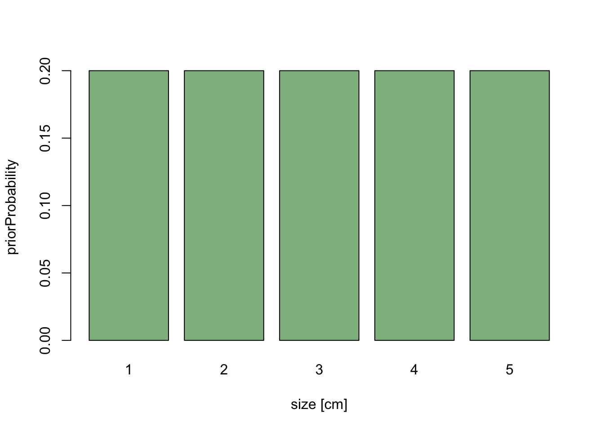
Now, let’s assume that we decide do change the analysis slightly, and measure average size in the basal area, which scales to diameter as x^2. We have already specified our prior knowledge about diameter, so for each cm of diameter we have specified the same weight.
If we rescale the x-axis to basal area, the length of each bar on the x-axis changes - large values are getting broader, short values are getting more narrow. If the probability weight is to stay the same, we get the following picture:
barplot(priorWeight/values^2, width = values^2, names.arg = values^2, xlab = "size [cm^2]", ylab = "priorProbability", col = "darkseagreen")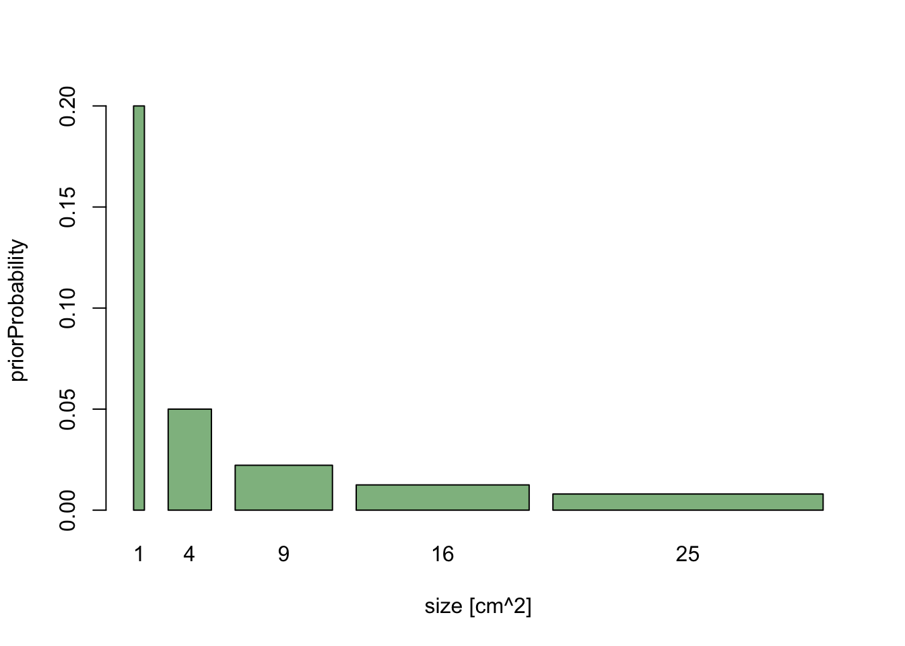
The message here is that if we are free to rescale predictors as we want (which is generally true), the prior cannot be flat for all possible parameter transformations.
A key for any rule about finding uninformative priors is therefore that the rule must be invariant under parameter transformation.
A second message is that in Bayesian statistics, you have to be a bit careful about parameter transformations, because we don’t just look at one value, but at a whole distribution, and the shape of this distribution will change of we reparameterize.
2.3.2 Default choices for uniformative priors
So, what is the right choice for uninformative priors? The somewhat disturbing answer is that there is no generally accepted solution for this problem. One famous proposal that contains many of the desirable properties is Jeffrey’s prior which is defined as
p(phi) ~ sqrt ( det ( F(phi)))
where F(phi) is the Fisher information matrix, which basically tells you how strongly the likelihood changes if parameters change. It is easy to see that the prior choice will then be
- invariant under rescaling parameters
- proportional to how strongly parameters affect the likelihood
To me, this seems to cover the main agreements about prior choice. Unfortunately, Jeffrey’s prior seems to have some problems for multivariate and hierarchical models, so it’s not a general panacea.
2.3.3 Conjugacy
Another issue that is often important is conjugacy. In Bayesian statistics, if the posterior distributions p(θ|x) are in the same family as the prior probability distribution p(θ), the prior and posterior are then called conjugate distributions, and the prior is called a conjugate prior for the likelihood function.
Conjugacy has two main advantages:
- The shape of the posterior is known, which allows approximating it parameterically
- Many sampling methods work more efficiently
One therefore usually tries to specify conjugate priors if possible.
2.3.4 Typical uninformative choices
- For scale parameters (something that affects the output linearly, like slope or intercept in a regression), use flat or quasi flat priors such as
- A bounded uniform distribution
- A wide normal distribution
- It is possible to put a bit tighter priors around scale parameters to get the Bayesian analogue of Lasso or Ridge regression, see
- Park, T. & Casella, G. (2008)
- Kyung, M.; Gill, J.; Ghosh, M.; Casella, G. et al. (2010) Penalized regression, standard errors, and Bayesian lassos. Bayesian Analysis, 5, 369-411.
- http://stats.stackexchange.com/questions/95395/ridge-regression-bayesian-interpretation?rq=1
- For variance parameters (something like the standard deviation in a linear regression), use decaying parameters such as
- 1/x (standard choice according to Jeffrey’s prior)
- inverse-gamma
- For variance hyperparameters in hierarchical models, use
- inverse-gamma
- half-t family (suggested by Gelman, 2006)
- Other than that, in doubt, people tend to choose conjugate prior distributions
2.3.5 Readings
Uninformative priors
Kass, R. E. & Wasserman, L. (1996) The selection of prior distributions by formal rules. J. Am. Stat. Assoc., American Statistical Association, 91, 1343-1370.
Jeffreys, H. (1946) An Invariant Form for the Prior Probability in Estimation Problems. Proceedings of the Royal Society of London. Series A, Mathematical and Physical Sciences, The Royal Society, 186, 453-461.
Jaynes, E. (1968) Prior probabilities. Systems Science and Cybernetics, IEEE Transactions on, IEEE, 4, 227-241.
Tibshirani, R. (1989) Noninformative priors for one parameter of many. Biometrika, 76, 604-608.
Park, T. & Casella, G. (2008) The Bayesian Lasso. Journal of the American Statistical Association, 103, 681-686.
Irony, T. Z. & Singpurwalla, N. D. (1997) Non-informative priors do not exist – a dialogue with José M. Bernardo. J. Stat. Plan. Infer., 65, 159-177.
Gelman, A.; Jakulin, A.; Pittau, M. G. & Su, Y.-S. (2008) A weakly informative default prior distribution for logistic and other regression models. The Annals of Applied Statistics, JSTOR, , 1360-1383.
Gelman, A. (2006) Prior distributions for variance parameters in hierarchical models. Bayesian Analysis, Citeseer, 1, 515-533.
Fong, Y.; Rue, H. & Wakefield, J. (2010) Bayesian inference for generalized linear mixed models. Biostatistics, 11, 397-412.
Ferguson, T. (1974) Prior distributions on spaces of probability measures. The Annals of Statistics, JSTOR, 2, 615-629.
Jeffrey’s prior
Jeffreys priors for mixture estimation http://arxiv.org/abs/1511.03145
Informative priors
Choy, S. L.; O’Leary, R. & Mengersen, K. (2009) Elicitation by design in ecology: using expert opinion to inform priors for Bayesian statistical models. Ecology, 90, 265-277